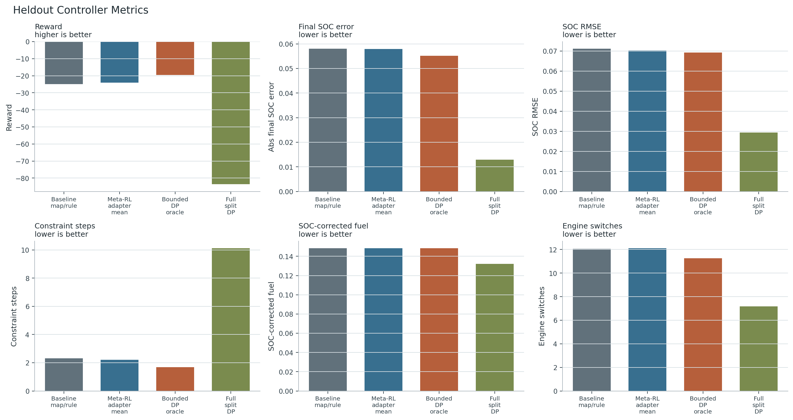
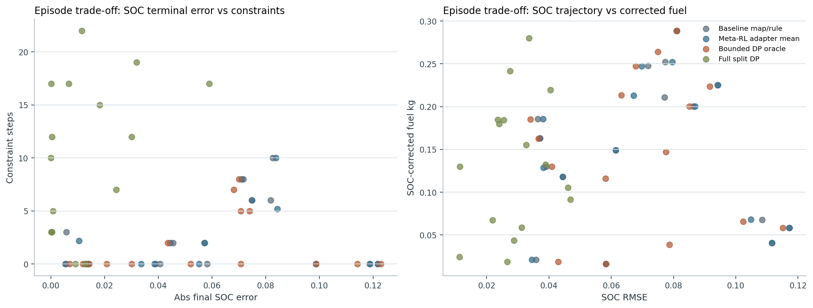
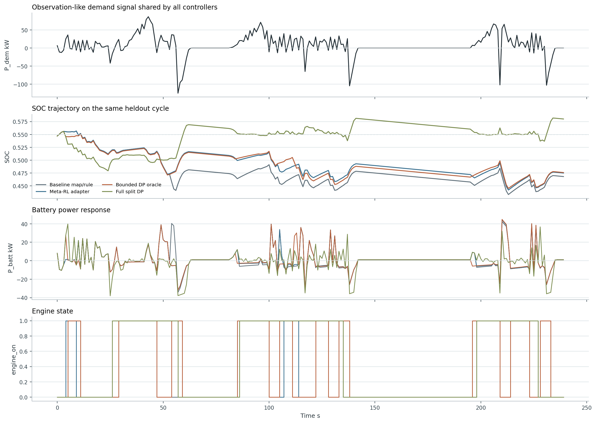
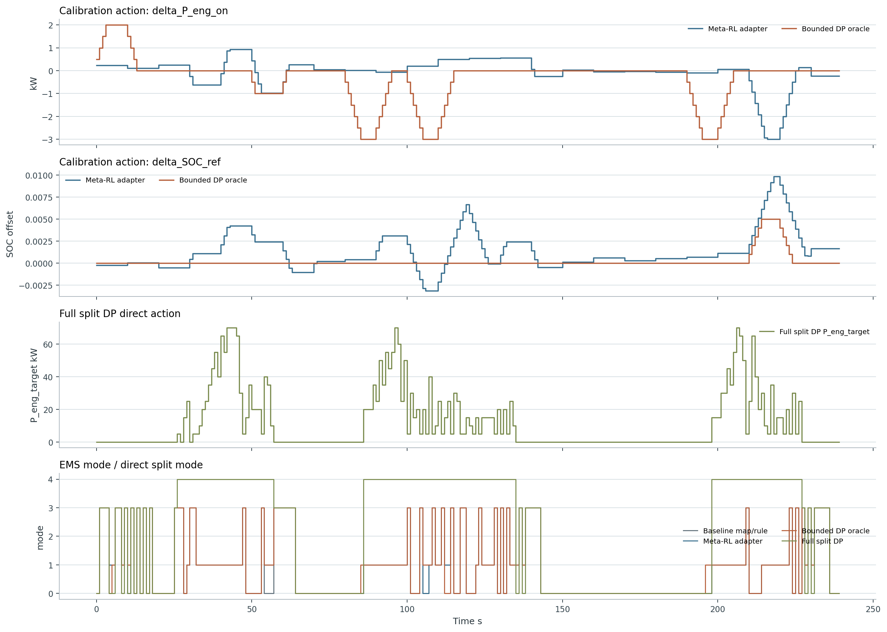
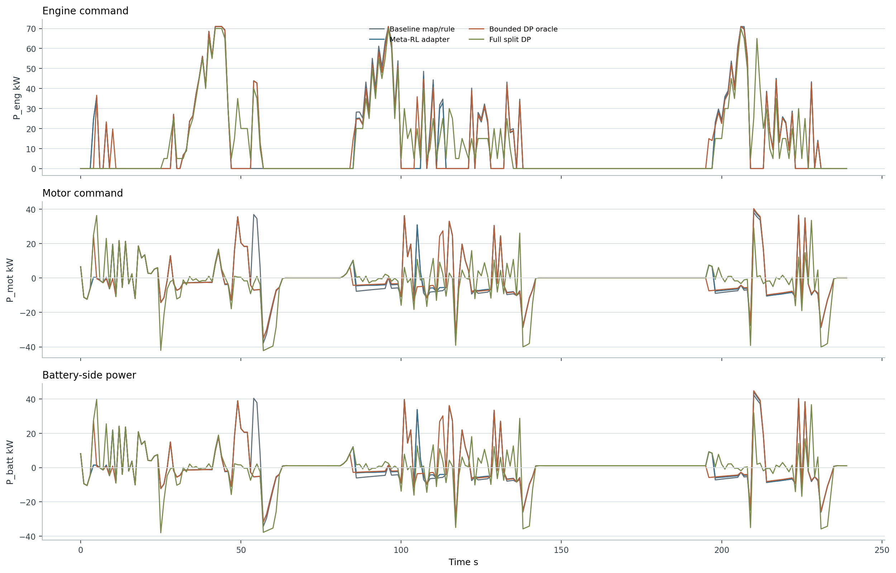
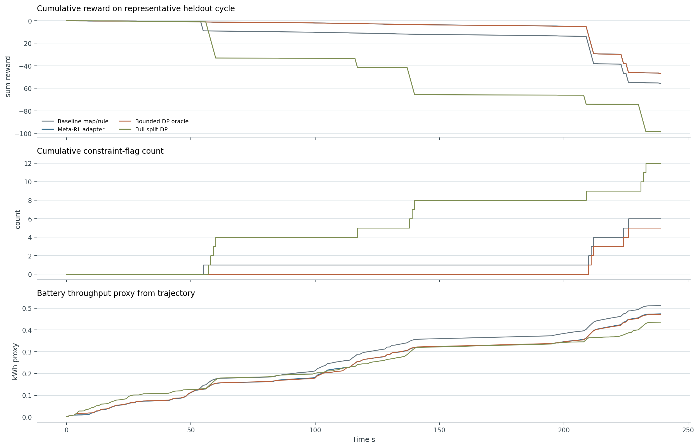

Controller 결과 비교 및 대표 시계열 분석
이 페이지는 실험 결과 분석을 위해 같은 heldout cycle에서 Baseline, Meta-RL adapter, bounded-offset DP oracle, full power-split DP oracle의 metric과 시계열을 한 곳에 모은 보고서다. Meta-RL은 여전히 delta_P_eng_on, delta_SOC_ref만 내는 calibration adapter로 해석한다.
1. Controller 권한을 먼저 분리해서 읽기
Baseline과 Meta-RL adapter, bounded DP oracle은 모두 map/rule EMS의 power split 권한을 유지한다. 차이는 offset을 누가 고르는가다. 반면 full split DP는 엔진 파워 목표를 직접 선택하므로, SOC/fuel lower-bound 성격을 볼 수는 있지만 논문 claim의 공정 비교군은 아니다.
Map/rule EMS -> engine state, EMS mode, power split, final commands
Full split DP -> P_eng_target 직접 선택, offline diagnostic only
| Controller | Action 권한 | 제어 구조 | 해석 위치 |
|---|---|---|---|
| Baseline map/rule | 외부 offset 없음 | 기존 map/rule EMS가 engine state, mode, power split을 모두 결정 | 공정한 기준 정책 |
| Meta-RL adapter | delta_P_eng_on, delta_SOC_ref | bounded calibration offset만 조정하고 power split은 map/rule EMS가 결정 | 논문 claim의 대상 |
| Bounded DP oracle | delta_P_eng_on, delta_SOC_ref | 미래 cycle을 알고 같은 offset 권한 안에서 offline DP 탐색 | same-authority upper bound, frontier-capped |
| Full split DP | P_eng_target 직접 선택 | engine power target을 직접 고르는 offline 진단 oracle | 권한이 달라 공정 비교가 아니라 trade-off 분석용 |
2. Heldout aggregate metric 비교
| Controller | Reward | 최종 SOC 오차 | SOC RMSE | 제약 위반 step | SOC 보정 연료 | 엔진 전환 |
|---|---|---|---|---|---|---|
| Baseline map/rulemap_rule_zero_offset | -24.915493 | 0.058034 | 0.071113 | 2.312500 | 0.148338 | 12.062500 |
| Meta-RL adapter meanlatent_sac_adapter_seed_mean | -24.095498 | 0.057867 | 0.070261 | 2.212500 | 0.148412 | 12.112500 |
| Bounded DP oraclebounded_offset_dp_oracle | -19.630013 | 0.055132 | 0.069269 | 1.687500 | 0.148425 | 11.250000 |
| Full split DPfull_power_split_dp_oracle | -83.635317 | 0.012878 | 0.029400 | 10.125000 | 0.132164 | 7.187500 |
Meta-RL adapter는 baseline보다 reward, SOC RMSE, constraint step에서 작은 개선을 보인다. Bounded DP는 같은 offset 권한 안에서 아직 회수 가능한 여지가 있음을 보여준다. Full split DP는 SOC/fuel을 크게 낮추지만 권한과 trade-off가 다르다.
Full split DP는 final SOC error 0.012878, SOC RMSE 0.029400까지 낮추지만, constraint steps가 2.312500에서 10.125000로 증가했다. 따라서 논문 claim의 공정 비교가 아니라 direct power-split oracle의 trade-off 진단으로 둔다.


3. 같은 heldout cycle에서 observation-like state 비교
대표 trajectory는 heldout_evaluation:000이며, Meta-RL trajectory는 저장된 seed 20260706의 deterministic rollout이다. 여기서 observation-like signal은 실제 policy 입력 전체를 완전히 복원한 것이 아니라, env가 기록한 SOC, 요구 파워, 배터리 파워, engine state 등 의사결정에 직접 연결되는 주요 상태 신호다.

4. 같은 cycle에서 action 비교
Meta-RL과 bounded DP는 calibration offset action만 가진다. Full split DP의 P_eng_target은 비교 편의를 위해 함께 그렸지만, 이 action은 Meta-RL adapter가 낼 수 없는 직접 power-split action이다.

5. Power split과 누적 결과
Power-domain testbed이므로 여기서의 split은 shaft torque가 아니라 engine/motor/battery power split이다. Full split DP가 SOC를 잘 맞추는 대신 constraint flag를 더 많이 만드는 이유는 이 시계열에서 limiter와 battery-side response가 함께 갈라지는 구간을 보면 추적할 수 있다.


6. 실험 결과 분석용 결론
- Meta-RL adapter는 baseline보다 안정적으로 조금 나아졌지만, 대표 cycle에서 action 크기가 작고 baseline과 power split이 크게 갈라지지 않는 구간이 많다. 다음 실험에서는 adapter가 개입할 여지가 큰 heldout profile을 따로 분석해야 한다.
- Bounded DP oracle은 같은 권한 안에서 reward와 constraint 개선 여지가 더 있음을 보여준다. 이는 알고리즘 구조보다 reward/task 구성과 support-query adaptation 신호를 더 선명하게 만드는 쪽이 우선이라는 뜻이다.
- Full split DP는 SOC/fuel lower-bound처럼 보이는 값을 만들지만 constraint robustness가 무너질 수 있다. 논문 본문 claim에는 쓰지 말고, appendix/diagnostic으로 controller authority 차이를 설명하는 자료로 두는 편이 안전하다.